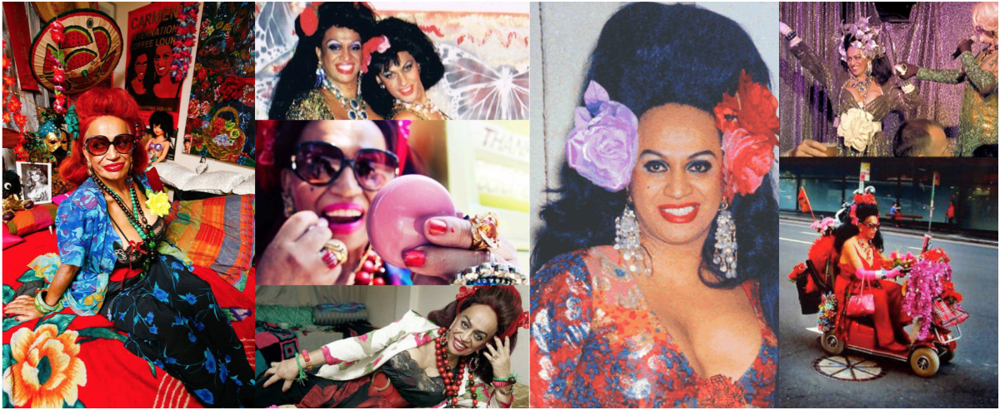

Carmen Rupe
The fearless Kiwi queen

Transgender activist and drag performer Carmen Rupe paved the way toward equal rights in New Zealand.
A timeline of Carmen's extraordinary life:
- 1936: Born Trevor Rupe in Taumarunui on North Island, New Zealand on 10th October
- 1955: Conscripted into military service, she begins training as a nurse; performs as American cabaret star Eartha Kitt during a concert despite fears of fellow soldiers' reactions — for which she receives a standing ovation
- 1957: Moves to Kings Cross in Sydney, Australia where she adopts the name Carmen, gets breast implants and becomes the first Maori drag performer
- 1966: Arrested for being dressed as a woman during a routine traffic stop. The case makes legal history when the judge rules cross-dressing to be legal
- 1968: Fed up with harassment in Sydney, Carmen moves to Wellington and opens a popular coffee lounge/brothel frequented by artists and politicians alike
“As soon as I heard about the drag shows opening there I said ‘bye bye men’s clothes’. I’ve never put anything on since. Never.”
~ Carmen on becoming a drag queen
- 1975: She is summoned to appear before the Privileges Committee by Prime Minister Robert Muldoon for suggesting some MPs are gay or bisexual
- 1977: Runs for the Wellington mayoralty, with the slogans get in behind and Carmen for mayor on a platform of gay marriage and legalised brothels
- 1980: Returns to Sydney after being heavily fined for making a "blatantly homosexual advance" to an undercover constable
- 1988: Publishes her autobiography, Having A Ball: My Life, outlining her escapades "from school boy to successful business woman"
They used to take us into the police station and give us a hiding and beat us up. I was locked up... about a dozen times. But it made me a stronger person today."
~ Carmen on being harassed by police
- 2003: Inducted into the Variety Hall of Fame
- 2008: Rides her mobility scooter topless at the head of the Decade of the Divas float at the Gay and Lesbian Mardi Gras
- 2013: Passed away on 14th December from kidney failure
- 2016: Four sets of traffic lights in Wellington's central business district are fitted with green pedestrial lights depicting Carmen for the 30th anniversary of the Homosexual Law Reform Act